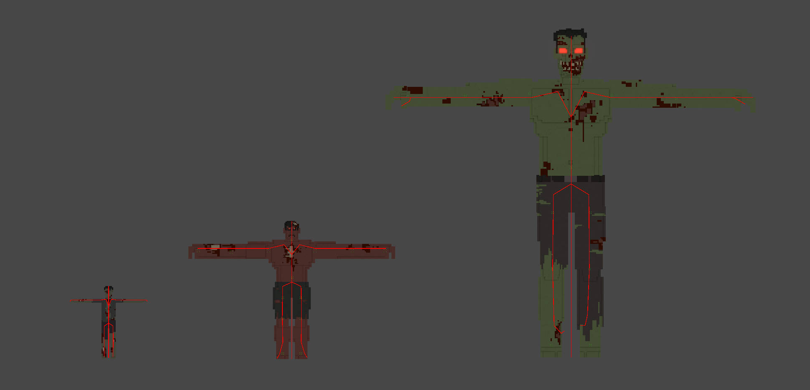
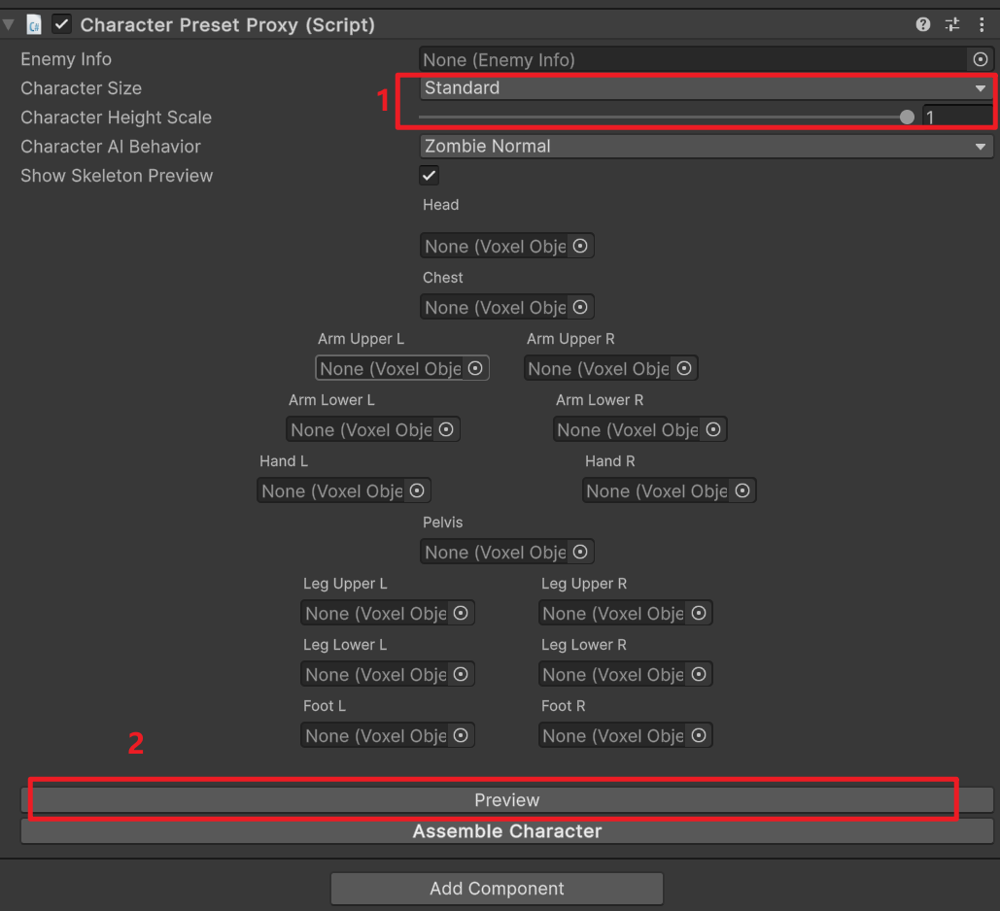

The CharacterPresetProxy component is the central configuration hub for creating custom characters in Voxel Playground. It defines the character's physical attributes, AI behavior, combat stats, and visual appearance (via voxel models).
If you want the full modding workflow, including voxel preparation, import, limb alignment, manifest setup, and export, see Tutorial: Configuring a Character.

You can configure the character's base size using the CharacterSize option in CharacterPresetProxy.
| Preset | Description | In-Game Height |
|---|---|---|
| Standard | Standard humanoid size (e.g., Humans). | ~2 meters |
| Large | Large humanoid size (e.g., Orcs). | ~4 meters |
| Massive | Massive giant size (e.g., Giants). | ~8 meters |
CharacterHeightScale1.0CharacterSize preset.In a practical workflow, modders usually set the rough body part layout in MagicaVoxel first, then use CharacterSize, CharacterHeightScale, and limb alignment in the imported prefab to reach the final in-game proportions. The initial T-pose, A-pose, or source size does not need to be exact if the final proxy setup is correct.
The EnemyInfo field references a ScriptableObject that defines the character's combat and survival statistics. You can create a new EnemyInfo asset (Right-click > Create > VoxelPlayground > EnemyInfo) and assign it here.
Damage To Character: Damage dealt to players/NPCs.Damage To Building: Damage dealt to structures.Damage To Character Cooldown: Time between attacks.Die Completeness Ratio: The threshold of remaining body voxels below which the enemy dies (Range 0.1 - 1.0). Higher values make the enemy more fragile.Walking Speed: Movement speed (0.0 - 2.0).Rotate Speed: Turning speed (0.0 - 2.0).Drop Roll).Knock Out, Fire, Poison).Rank Bgm).This is one of the main gameplay-facing settings modders usually adjust after character import. The modding tutorial shows where this fits in the end-to-end prefab setup.
Select a behavior pattern from the CharacterAIBehavior dropdown. This determines how the character acts in combat.
ZombieNormal, ZombieRunner, ZombieAcid, ZombieBoomer, ZombieMutant, ZombieGiant.SoldierLv1.Like EnemyInfo, this is usually configured after the voxel parts have been imported and assigned to the skeleton.

The character's body is assembled from individual voxel parts. Each part is a VoxelObjectProxy.
ArmUpperL, ArmLowerL, HandL (and Right counterparts)LegUpperL, LegLowerL, FootL (and Right counterparts)Each VoxelObjectProxy should be assigned a .vox file (via the voxelFile field) representing that specific body part.
For the best import result, the source .vox file should already be separated into individual body parts with clear names. See Tutorial: Configuring a Character for the recommended naming, import process, and skeleton alignment workflow.